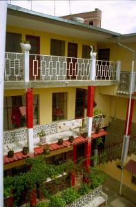
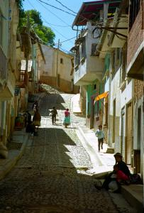
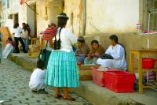

|
Samedi 6 octobre
On quitte déjà La Paz, mais seulement pour deux jours. Destination Coroico
et non Cocorico comme le pense Marion, à une centaine de kilomètres au nord.
Nous voilà donc en route pour la région des Yungas. Entre les hauts plateaux
et l'Amazonie. La route est superbe et impressionnante. Ca commence par monter
et pourtant on est déjà haut. On passe un col à 4800 mètres, sous le brouillard
et la neige fondante.
Mais c'est un peu après, plus bas, que ça devient impressionnant. D'un seul
coup la végétation change. Elle devient verte, intense, il y a des bananiers,
des fougères géantes, de chouettes fleurs, un tas d'arbres et... un énorme précipice
parfois de presque 1000 mètres paraît-il, parfois si à-pic qu'on ne voit pas
en-dessous sauf le torrent tout au fond de la vallée. Et la route, à flanc de
montagne, taillée dans la montagne même, épousant ses formes est tellement étroite
qu'il faut souvent s'arrêter pour laisser passer les bus et les camions qui
remontent dans l'autre sens. Et le tout non goudronné évidemment, c'est bien
plus rigolo. De temps en temps, passe sous de véritables petites cascades créées
par la pluie qui doit être abondante vu la végétation. Ca nous arrose mais ça
n'arrête pas notre chauffeur intrépide. Il faut dire qu'il maîtrise la situation,
il est de Coroico et il fait la route depuis 1973. Ca rasure un peu. Mais on
a quand même un peu de mal à oublier qu'il y a une quarantaine de camions qui
font le grand saut tous les ans.
Ce matin dans le micro, un papi qui riait tout le temps, en voyage chez ses
copains, s'est mis à papoter avec moi. Il m'a raconté qu'il buvait du whiskye
pour la santé, avec ses amis, qu'il mangeait et dansait avec eux mais ne couchait
pas! Ha! Ha! Ha! Pour lui, l'italien et le portugais, c'est du mauvais espagnol.
Le français par contre, c'est une vraie langue. Ha! Ha! Ha! Et puis il m'a demandé
mon nom parce que els amis ça se salue et pour ça. il faut connaître le nom.
"Marion", ça ne l'inspirait pas. "Marrria" avec tous les R roulés, il aimait
mieux... Sympas les paceños (habitants de La Paz, incultes!).
Dimanche 7 octobre
Coroico est un gros village planté au milieu des vallées. On se croirait en
vacances. Ha! Ha! Ha! Il y fait carrément bon, hier dans le minibus tout le
monde enlevait blousons et couches de pulls au fur et à mesure qu'on descendait.
On n'est plus qu'à 1700 mètres d'altitude. Le village est joli et tranquille,
les gens ont l'air plus zen qu'ailleurs, c'est calme. Ici, il y a une autre
particularité, il y a plein d'afro-boliviens. Ils sont arrivés pour bosser dans
les mines en Bolivie, un nombre incroyable y est mort. Ce trafic d'esclaves
noirs a commencé lorsque s'est arrêté la mita, le travail forcé et non rémunéré
des indiens (qui a tout de même provoqué 3 millions de morts dans les mines
à Potosi). Ca s'est passé au moment où le Vatican a décidé que si, finalement,
les indiens avaient quand même une âme... Pour les noirs, ce n'était toujours
pas le cas... Aujourd'hui, ils sont intégrés et forment un groupe culturel ici
en Bolivie. Leur musique a même inspiré la lambada! Une de leurs chansons a
été piquée, un peu arrangée et ça donne le tube brésilien que tout le monde
connaît.
Beaucoup de jeumes de La Paz viennent à Coroico passer le wee-end. Dans notre
hôtel, il n'y a que ça. Hier soir, on les voyait tous en train de se coiffer
et de se faire beau pour aller danser. Le soir, le village semble se métamorphoser,
la place se remplit et la musique monte d'un peu partout. Nous, hier, on a été
se coucher tôt. Le bus, le changement de température (corporelle aussi pour
Lionel qui se mouche beaucoup), ça fatigue. Du coup on a trouvé un peu de forces
pour monter ce matin au-dessus du village. Quel calme. Et quelle vue. Ca vaut
le coup de s'essouffler un peu.
Mais hélas, il faut dájè partir. On a rendez-vous avec Jéjé, notre camarade
venu de France passer quelques jours de vacances bien méritées ici en Bolivie.
Son vrai nom, c'est Jérôme mais il insiste pour qu'on l'affuble de ce surnom
de camioneur! Alors on reprend la route. On a réservé hier pour avoir des places
à l'avant et du bon côté. Histoire de se faire un peu peur, et aussi de prendre
quelques photos au passage. Mais la grosse de la compagnie Yungeñas nous a virés
du minibus pour y mettre ses copines! Il n'y a plus de place pour nous sauf
vers 17H00 dans un gros bus. Pas question, déjà que la route est étroite pour
un minibus... C'est souvent comme ça, que ce soit agences de voyages, de bus
ou bien hôtels, quand ils ont un peu trop de renommée -souvent dûe en partie
aux guides de voyages- ils font un peu n'importe quoi. Nous voilà donc dans
un minibus d'une autre compagnie. Il est 17H30. Très vite, on se retrouve dans
le noir et dans le brouillard sur cette route de fous! Au fur et à mesure que
baisse l'intensité du jour et qu'augmente la densité du brouillard, je sens
que Marion se crispe un peu. On ne voit guère à plus de 2 ou 3 mètres la route
éclairée par les phares du bus. A 21H00, on arrive sain et sauf une fois de
plus.
Suite du voyage : Retour à La Paz
|

Bolivie
Coroico
|

Bolivie
Coroico
|

Bolivie
Coroico
|
|
|